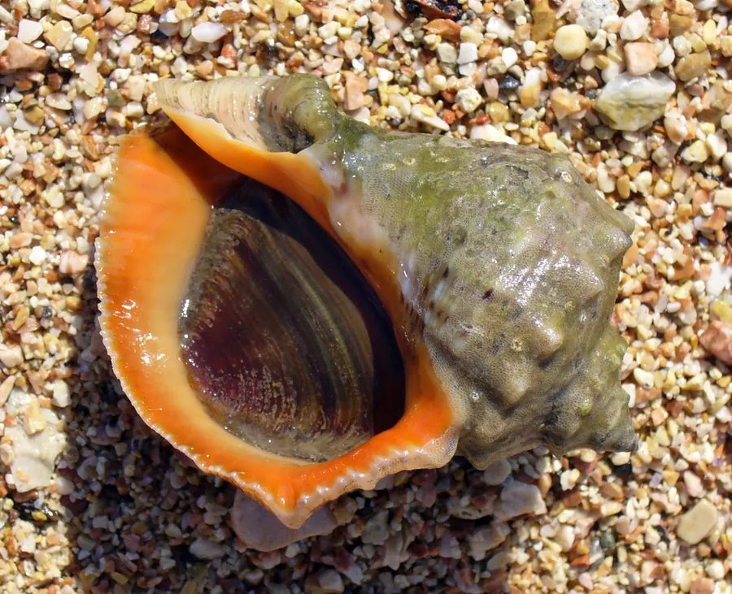

软体动物 · 动物界
脉红螺 Rapana venosa

壳大而厚重、壳口橙红的海螺，壳面有螺旋肋和褐色斑，钻食双壳类，是中国北方重要的食用螺和入侵物种。
- 分类
- 门软体动物门纲腹足纲目新腹足目科骨螺科属红螺属
- 栖息环境
- 潮间带下区至水深二十米的岩礁、砾石和沙泥底
- 地理分布
- 西北太平洋沿岸（中国北方、日本、朝鲜半岛、俄罗斯远东），并已入侵黑海、地中海与北美
- 保护级别
- 尚无保护级别；为著名入侵物种，入侵地实施监测与清除
物种志
脉红螺的贝壳大而厚重，壳高可达十厘米以上，壳形呈陀螺状，螺层约六层，体螺层膨大，肩部有明显的角状突起，壳面灰褐至黄褐色，布有粗大的螺旋肋和深褐色的斑块，肋间还有细密的生长纹。壳口宽大，呈橙红色至橘红色，外唇内侧有齿状突起，前沟短，口盖角质。足部肌肉发达，吸力很强。
它分布于西北太平洋沿岸，包括中国北方沿海、日本、朝鲜半岛和俄罗斯远东，栖息在潮间带下区至水深二十米的岩礁、砾石和沙泥底，是肉食性螺类，靠足抱住牡蛎、蛤蜊等双壳类，用酸性分泌物钻孔或用齿舌刮食。它雌雄异体，繁殖期在夏季，卵囊聚集成块附着在礁石上。它随船舶压舱水和附着生物传入黑海、地中海和北美，成为著名的入侵物种，对当地贝类养殖造成严重损失。它在中国北方是重要的食用螺，尚无保护级别，但入侵地已实施监测和清除。
形态与习性
- 壳高可达十厘米以上，厚重陀螺状
- 壳面灰褐至黄褐，有粗大螺旋肋与褐斑
- 壳口宽大，呈橙红至橘红色
- 栖息水层潮间带下区至水深二十米
- 食性钻食牡蛎、蛤蜊等双壳类
- 入侵随船舶传播至黑海、地中海与北美
趣味知识
- 它壳口那抹橙红像涂了漆，是北方海螺里最气派的一种。
- 它抱住蛤蜊后慢慢钻孔，一顿饭要吃上好几个小时。
- 它搭着轮船的压舱水去了黑海，把当地的贝类养殖搅得一塌糊涂。